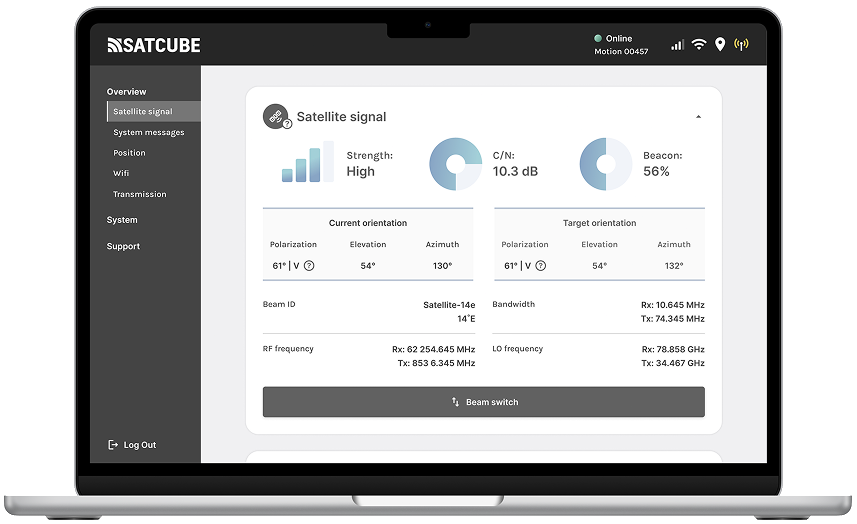
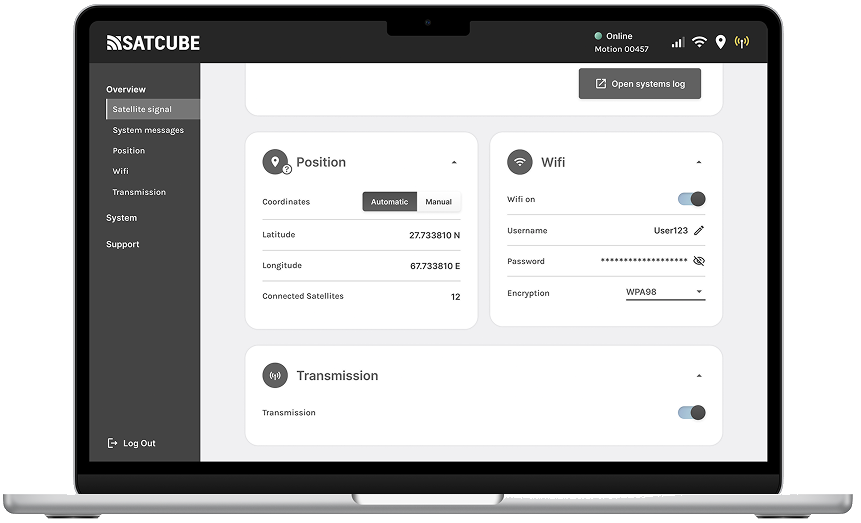
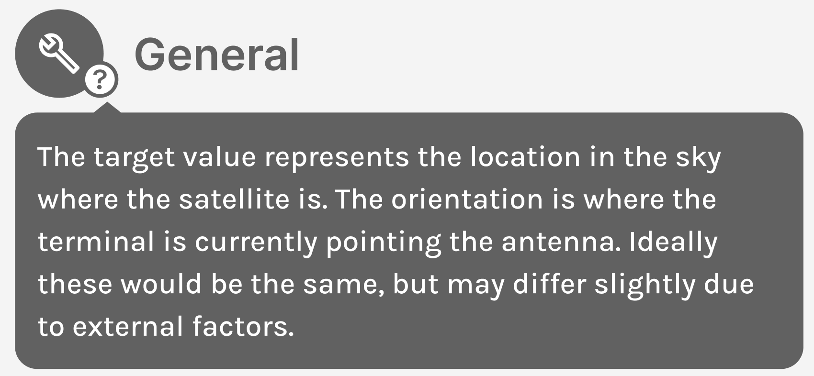
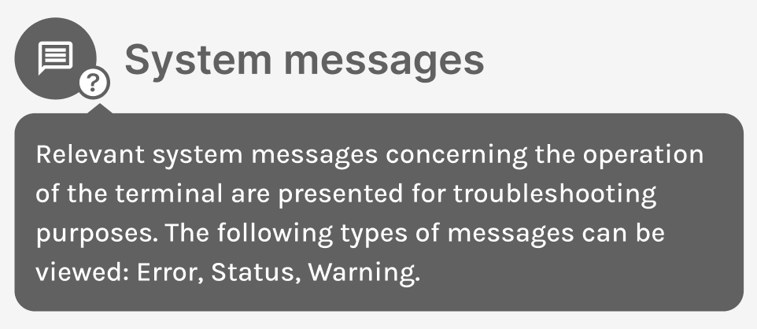

02 · Product · Satcube
The Satcube WebGUI lets anyone point, configure and monitor a satellite terminal from a browser, even with zero space-industry knowledge.

The WebGUI overview: satellite signal, strength, orientation and frequencies on one calm dashboard.
WebGUI stands for web-Guided User Interface, a browser-based tool for configuring and monitoring Satcube's portable satellite terminals in real time. It handles complex settings, detailed statistics and technical parameters.
It's a genuinely advanced kit, and it has to work equally well for first-timers and seasoned experts. My job, as product owner and designer, was to make sure it never felt as complex as it is.
A brand-new user, with no space-industry background, should be able to open the WebGUI and understand exactly what they're doing.
The interface is the bridge between deeply technical hardware and people who just need it to work.
I ran interviews with people inside and outside the company to define who actually uses the tool and built personas to keep those people present in design and development decisions.
Ideating and sketching with Figma and good old pen & paper, fast and easy to throw away when a better idea showed up.
A/B testing, interviews and observations with internal and external participants. Between sessions I adjusted the design and raised the fidelity.
Evaluations showed the design landed where it needed to, according to users, the final interface was intuitive, easy to use and easy to scale for the development and design team. Two decisions did much of that heavy lifting.


